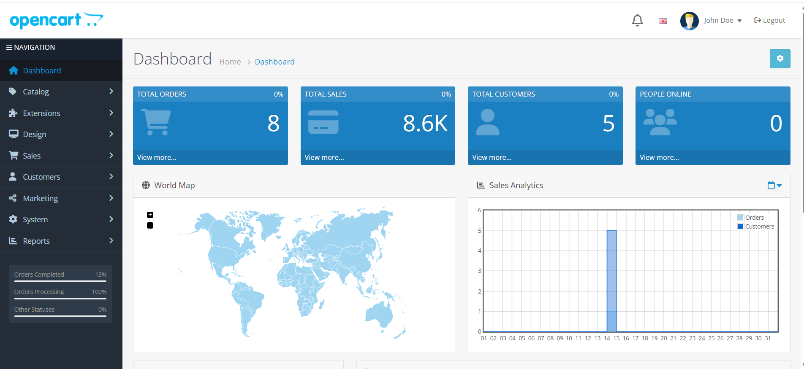
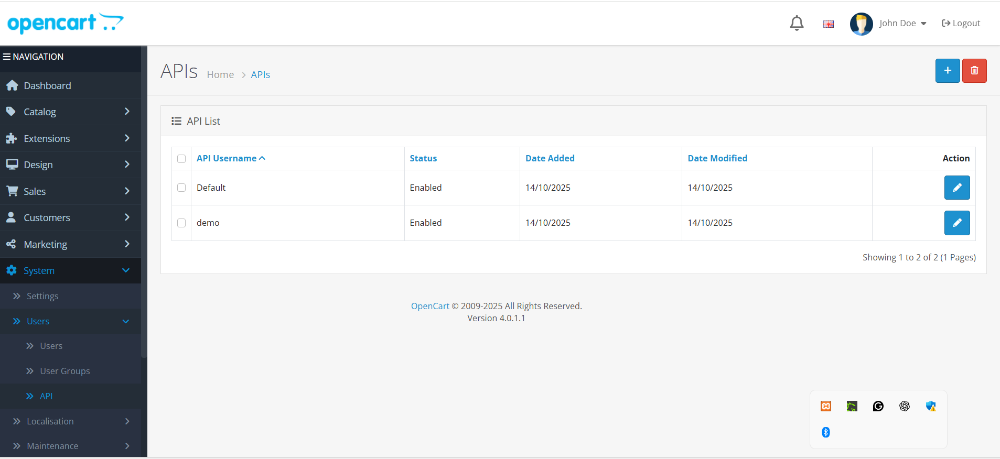
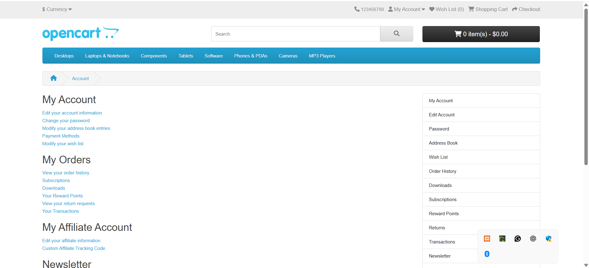

Test Plan Version
OpenCart_XAMPP_UI_API_Performance_v1.1
1. Test Plan Identifier
OpenCart_XAMPP_UI_API_Performance_v1.1
2. Introduction
This Test Plan outlines the strategy, scope, and execution approach for validating the functional
and non-functional quality of the OpenCart e-commerce application hosted locally on XAMPP.
Testing includes UI functional testing, REST API validation, and comprehensive performance engineering
such as load, stress, scalability, endurance, configuration, and volume testing using Apache JMeter.
3. Test Items
OpenCart Frontend (Customer Storefront), OpenCart Backend (Admin Portal), REST API Endpoints
(Authentication, Products, Cart, Orders), and the server/infrastructure under performance evaluation.
4. Features to be Tested
UI Functional Testing
User login and registration, product browsing and filters, cart operations (add, edit, remove),
checkout and order confirmation.
Admin Testing
Admin login, product, cart operations, order management.
API Testing
Login and token generation, product list retrieval, cart add/remove actions, order submission.
Performance Testing
Load testing (10–100–250–500 users), stress testing, scalability testing, endurance testing,
volume testing, configuration testing, throughput and latency analysis, and resource monitoring via PerfMon
(CPU, memory, disk, network).
5. Features Not to be Tested
Payment gateways, third-party modules, mobile/responsive layout, email or SMS notifications,
mobile emulation, and any external integrations outside core OpenCart.
6. Approach
Manual Functional Testing
Exploratory and scenario-based testing on Chrome, Firefox, and Edge.
Automation Testing
PyTest with Page Object Model, soft assertions with screenshots, HTML and JSON reporting,
parallel execution where applicable.
API Testing
Postman collections for modelling flows, automated API validation using Python requests,
covering positive, negative, and security scenarios.
Performance Testing
Apache JMeter 5.6.3 with CSV-driven data, Uniform Random and Constant Throughput timers,
AutoStop thresholds (>3s ART or >1% errors), and PerfMon-based resource monitoring.
7. Item Pass/Fail Criteria
Functional Criteria
Pass: All high-priority tests pass with no critical issues.
Fail: Any defect causing data loss, security issues, or repeated critical failures.
Performance Criteria (SLA)
95% of requests under 3 seconds, error rate ≤1%, and system stability without resource exhaustion.
Tests fail if thresholds are exceeded or the application becomes unresponsive.
8. Suspension and Resumption Requirements
Testing is suspended in cases of server crashes, persistent 5xx errors, database lockups,
unstable environment, or blocked critical functionality.
Testing resumes once issues are fixed, the environment is stabilised, and required resets are completed.
9. Test Deliverables
Test Plan, functional test cases, automated PyTest suite, API Postman collection, JMeter test plans,
performance reports, traceability matrix, defect logs, and final test summary report.
10. Testing Tasks
Scope review, test case design, automation development, API modelling, execution of UI/API/Performance tests,
load and stress modelling, defect reporting and retesting, final reporting.
11. Environmental Needs
Software
Windows 11, XAMPP (Apache, MySQL, PHP), Chrome, Firefox, Edge, PyCharm, Postman, JMeter, Selenium, Python.
Optional Monitoring Tools
JMeter PerfMon plugin, Windows Resource Monitor, Apache access/error logs, MySQL slow query logs.
12. Responsibilities
Test Designer & Executor: George Petre.
Reviewer: To be determined.
Project Owner: George Petre.
13. Schedule
Week 1 – Scope & Test Plan creation.
Week 2 – Manual Test Case development.
Week 3 – Automation & API testing.
Week 4 – Load, Stress, Scalability testing.
Week 5 – Reporting.
14. Risks & Contingencies
Risks include XAMPP environment instability, hardware limitations, lack of production-like datasets,
and documentation gaps.
Mitigation includes gradual load increases, AutoStop rules, frequent environment resets,
dataset generation, and validation using logs and PerfMon metrics.
15. Approvals
Test Owner: George Petre — Status: Done!
Reviewer: To be determined — Status: Pending...
A comprehensive manual testing project for the OpenCart e-commerce application, focused on validating UI functionality, usability, and key customer workflows including registration, login, cart, and checkout. Following the IEEE 829 (2008) standard, this project delivers 64 detailed test cases, defect reports, and evidence of execution, ensuring full traceability and coverage across all major UI modules.
An advanced automation testing project for the OpenCart e-commerce platform, built using Python, PyTest, and Selenium WebDriver. This project automates end-to-end UI and functional workflows such as registration, login, navigation, cart, and checkout. Designed with the Page Object Model (POM) for scalability and maintainability, it integrates custom Soft Assertions, multi-browser testing, and detailed HTML and Allure reporting — showcasing a complete, standards-aligned automation framework based on IEEE 829 practices.

A manual testing project focused on validating the functionality and usability of the OpenCart Admin Panel. Designed and executed following the IEEE 829 (2008) standard, it verifies key admin workflows including login, product and order management, and dashboard operations. All five test cases were executed successfully, confirming that the admin interface performs accurately and consistently across core modules and browsers.
A fully automated testing framework for the OpenCart Admin Panel, developed using Python, PyTest, and Selenium WebDriver. The project validates core administrative workflows such as product and order management through the Page Object Model (POM) design. Featuring custom Soft Assertions, cross-browser execution, and detailed HTML/Allure reports, it ensures functional accuracy, maintainability, and professional reporting aligned with IEEE 829 standards.

A comprehensive Postman API testing project for OpenCart v4.1.0.3, designed in full compliance with IEEE 829 standards. This collection covers positive and negative test flows across key modules — including Auth, Cart, Customer, Shipping, Payment, and Order — ensuring complete functional validation and traceability. Executed using Postman and Newman CLI, the suite achieved 100% pass rate (21 tests) with detailed result reports and modular environment configuration for local API testing.

This project delivers a full end-to-end performance evaluation of an OpenCart e-commerce platform running on a local XAMPP environment. Using Apache JMeter 5.6.3, it assesses system behaviour under load, volume, stress, and scalability scenarios.
The test suite includes stepped load tests, concurrency modelling, prolonged stability tests, and stress-to-failure analysis — all supported by PerfMon server monitoring and automated SLA validation (≤3s response time, ≤1% error rate).
Each test is documented with clear objectives, load profiles, acceptance criteria, and results, including average response times, throughput, CPU/memory utilisation, disk activity, and pass/fail outcomes. The project also incorporates detailed reporting in XLSX format and professional “Test Not Executed” justifications aligned with industry standards.
This work demonstrates proficiency in performance engineering, JMeter scripting, analysis of system bottlenecks, and structured reporting for real-world test scenarios.
Overall Test Summary Report – OpenCart Full Testing Project
Summary of Testing Activities
A complete test cycle was executed across UI Manual Testing, Admin Portal Testing, API Testing,
and Performance Engineering in alignment with the IEEE 829 (2008) standard.
The test effort included 64 front-end manual UI cases, 5 admin panel cases, 21 API tests,
and 17 performance scenarios executed using JMeter, Postman, and PyTest-based automation.
Functional Test Results (UI)
The majority of UI test cases passed successfully, confirming correct behaviour for registration,
login, navigation, product browsing, cart operations, and checkout flows.
Out of 64 UI test cases, 62 passed and 2 failed, both of which were raised as documented defects:
1) OPC-REG-005 – Register with special characters in name: registration was accepted
with invalid characters, indicating missing validation on both frontend and backend.
2) OPC-CHK-004 – Edit quantity in cart then checkout: checkout failed due to missing
shipping methods on the admin side, blocking order completion.
These failures are intentional findings from negative and edge-case scenarios and are tracked as
known issues in the report.
Outcome: 62/64 Passed, 2/64 Failed (defects logged)
Admin Portal Test Results
Admin Portal testing validated login, product and category management, order handling, and account
configuration. All executed admin test cases completed successfully without functional defects,
confirming that the back-office workflows behave as expected under normal usage.
Outcome: 100% Pass (Admin Panel)
API Test Results
API endpoints for authentication, product retrieval, cart manipulation, and order submission were
tested using Postman and automated Python scripts. Positive, negative, and boundary scenarios
produced correct status codes, responses, and error messages, with no functional regression observed.
Outcome: 21/21 Passed (100% Pass)
Performance Test Results
Load tests with stepped user levels (10–100–250–500) stayed within the defined SLA
of 3 seconds average response time and ≤1% error rate. Endurance testing showed stable throughput
and no signs of memory leaks or long-term degradation. Spike tests demonstrated resilience to
sudden increases and decreases in traffic.
Stress testing intentionally pushed the system beyond its comfortable limits. Under very high
concurrency (around 150–175 users), response times exceeded the SLA and error rates increased,
which is consistent with the capacity limits of the local XAMPP environment rather than a defect
in OpenCart itself.
Outcome: PASS for Load, Soak, and Spike; Expected SLA breach under Stress
Overall System Quality Evaluation
The OpenCart application demonstrates strong functional stability, robust API behaviour,
and predictable performance under realistic load profiles. Two functional defects were identified
and documented: one related to missing input validation during registration and one related to
missing shipping configuration blocking checkout. These are valuable findings from negative and
boundary testing rather than random failures.
Overall, the system meets the defined test objectives for this environment and is suitable for
typical small to medium traffic levels, with clear recommendations for improving input validation
and shipping configuration.
Final System Status: PASS with known defects and stress-related limitations documented